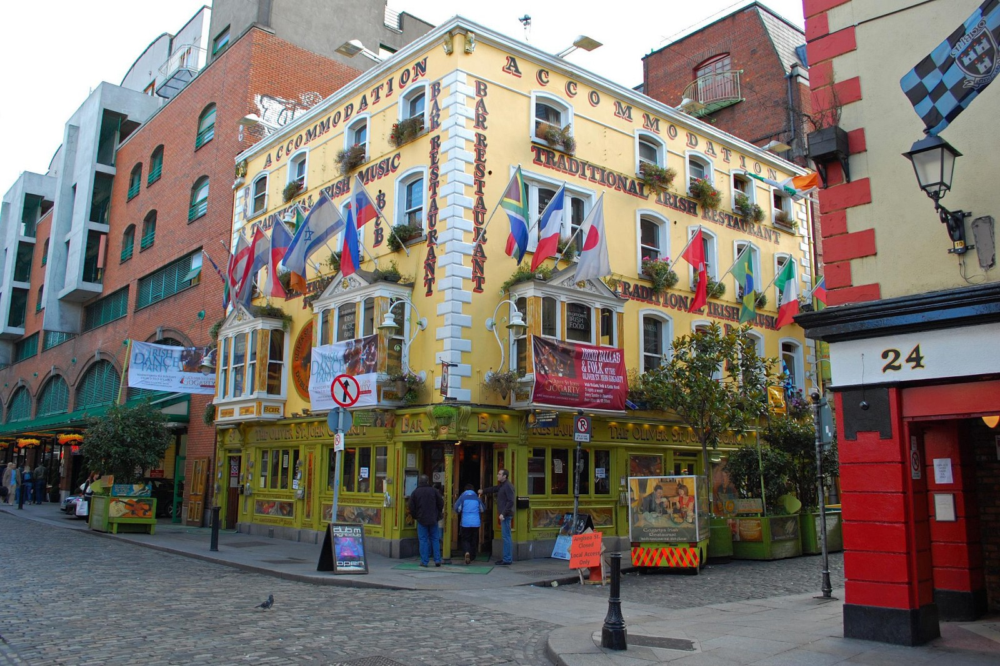
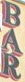
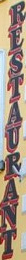
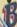
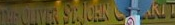
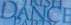

原图 ID：417cfad1483563c3
HierText / Open Images · Long 等，Google Research
来源：https://github.com/google-research-datasets/hiertext
许可：https://creativecommons.org/licenses/by-sa/4.0/
| 行 | 真实裁剪 | 官方原文 | 实际输出 | 对照 |
|---|---|---|---|---|
| 01 |  | BAR | R | 不匹配 |
| 02 |  | BAR | R | 不匹配 |
| 03 |  | RESTAURANT | （空结果） | 不匹配 |
| 04 |  | & FOLK | &FOLK | 不匹配 |
| 05 |  | IRISH BALLAD | TROR BALAT | 不匹配 |
| 06 |  | B | B | 匹配 |
| 07 |  | E | t | 不匹配 |
| 08 |  | THE OLIVER ST.JOHN ARTY | RFOLYHN T | 不匹配 |
| 09 | club m | cubm | 不匹配 | |
| 10 | nightclub | rcreeb | 不匹配 | |
| 11 | open | -eF | 不匹配 | |
| 12 | BaR | BaR | 匹配 | |
| 13 | CAFRE | CaFE | 不匹配 | |
| 14 | CAFE | （空结果） | 不匹配 | |
| 15 | Ba | 30 | 不匹配 | |
| 16 |  | ARTY | WTV | 不匹配 |
| 17 | PARTY | PARTY | 匹配 | |
| 18 | DANCE | DANCE | 匹配 | |
| 19 |  | IRISH | THSSC | 不匹配 |
| 20 | GOGARTY | UOGATE | 不匹配 | |
| 21 |  | DANCE | DANCE | 匹配 |
| 22 | IRISH | IRIST | 不匹配 | |
| 23 | IRISH | 05 | 不匹配 | |
| 24 |  | USIC | SAC | 不匹配 |